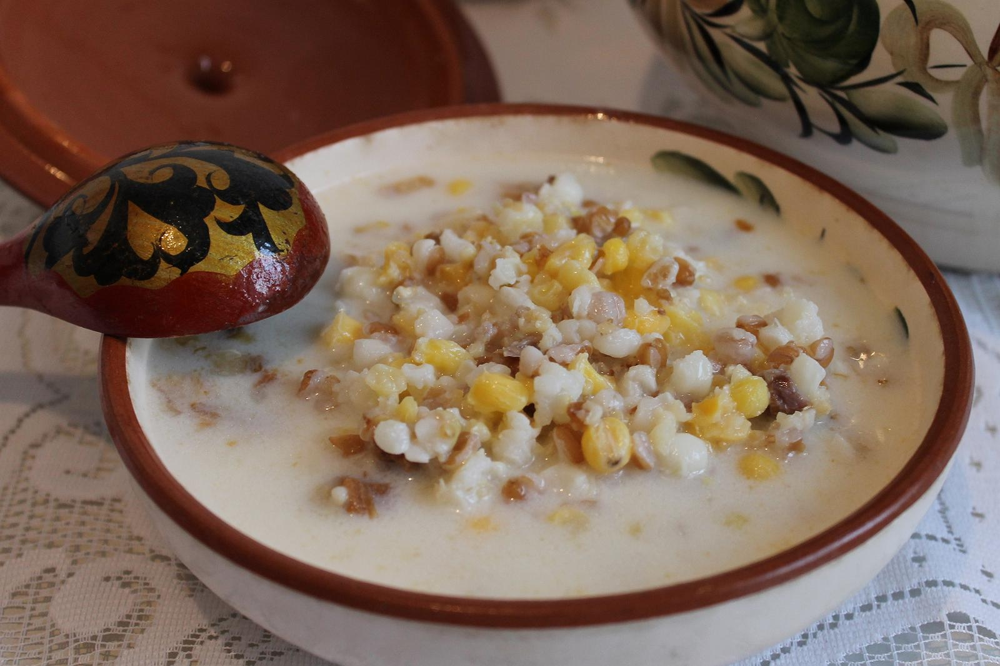

Nauryz Koje

Description
Nauryz kozhe (Kazakh: наурыз көже; Kyrgyz: нооруз көже) is a Kazakh/Kyrgyz drink of milk, horse meat, salt, kashk and grains.
On Nauryz (Nooruz), the Kazakh and the Kyrgyz start the new year with this drink for good luck because it is considered a symbol of wealth and richness in the coming year. It consists of seven food elements, such as milk, meat, oil, millet, rice, raisins, corn (the recipe can vary).
Ingredients
- 500 g - meat (preferably horse meat (the best is kazy, if you can get it where you are) or beef or lamb. You can also mix them.
- Water - enough to boil meat to readiness.
- 1L - Kefir ( if you can get kefir then use natural yogurt mixed with some water or milk)
- Salt to taste
- 50g - Rice
- 100g - Barley
- 50g - Noodles/Pasta
Steps
- Boil your meat products in sufficient amount of water (to cover the meat in the pot) for at least 2-3 hours. Readiness depends on the type of meat. Make sure to skim off foam that builds up when it just starts boiling. That gives you clear stock. When ready take out the meat.
- Have your barley half cooked by boiling it in salted (reasonably) water while the meat is being cooked. Then when the meat is ready pop it in together with rice.
- Add the noodles after rice and barley been in stock for 10-15 minutes. Give it 5 more minutes for the noodles to be ready. Best is to use home-made noodles. Some don’t like noodles in soup. So if you are one of them and don’t like it neither then just miss it out.
- Slice the meat up in smaller chunks and add it back to the pot.
- Let it all cool down a bit before you add the kefir. And voila. Enjoy your meal. Wait, did I tell you that it's nice cold.